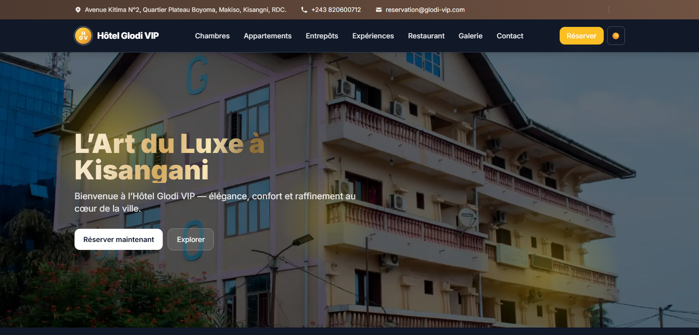
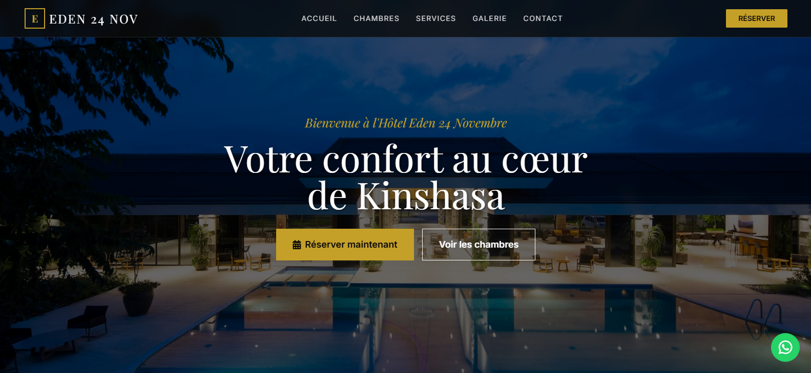
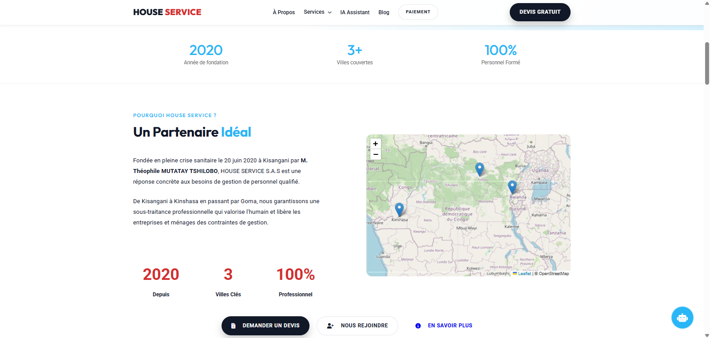
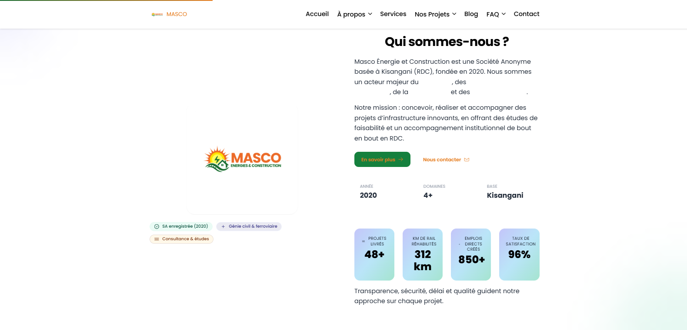

Sites web
Des sites modernes qui présentent votre activité clairement et donnent envie de vous faire confiance.
WEB DEVELOPER DIGITAL CONSULTANT
Je conçois des sites web et des solutions digitales qui rendent les entreprises plus visibles, plus crédibles et plus efficaces.
Web Designer
Développeur Web
+
Créatif digital
Architecte d'expériences
Consultant digital
Partenaire de croissance
Une même intention : donner forme aux idées qui méritent d'avancer.
Une bonne solution digitale commence par une bonne question. J'aide les entreprises, les écoles et les indépendants à rendre leurs idées concrètes, simples et utiles.
Des sites modernes qui présentent votre activité clairement et donnent envie de vous faire confiance.
Des plateformes qui simplifient vos opérations et permettent à vos utilisateurs de faire plus en moins de temps.
Des interfaces pensées pour être simples, rapides et agréables à utiliser.
J'aide à transformer une idée ou un problème en solution digitale concrète.
Du besoinau projet visible.
Explorer les réalisations ↗Chaque projet part d'un besoin concret. Parcourez les réalisations, puis ouvrez directement le site qui vous intéresse.

Présenter un hôtel, ses chambres et ses expériences avec une vitrine premium.
Site hôtelier · Réservation · Django · React · Tailwind

Créer une présence digitale élégante pour présenter les chambres et faciliter la réservation.
Site hôtelier · HTML · CSS · JavaScript

Donner à une entreprise de services une présence claire, visible et orientée vers la demande de devis.
Site institutionnel · Services · Paiement

Structurer la présentation d'une entreprise d'énergies et de construction autour de ses domaines d'activité.
Site institutionnel · Next.js · Docker · Prisma
Je commence par comprendre votre activité, vos utilisateurs et le problème réel.
Je transforme l'idée en une expérience simple et compréhensible.
Je développe une solution rapide, fiable et adaptée au besoin.
Une solution digitale se perfectionne avec le temps et les usages.
Je suis David, développeur web et consultant digital. J'aime prendre des idées parfois complexes et les transformer en expériences simples, utiles et accessibles.
Mon travail se situe à la rencontre entre technologie, design et compréhension des besoins humains.
Je ne cherche pas seulement à construire quelque chose qui fonctionne. Je cherche à construire quelque chose que les gens comprennent, utilisent et apprécient.
Je choisis la technologie en fonction du problème à résoudre, pas l'inverse.
01 04
Chaque projet est évalué par sa clarté, son utilité et sa capacité à améliorer concrètement une activité.
Des mots recueillis dans l’ancienne version du portfolio, auprès de clients et collaborateurs.
« David a transformé notre idée en une application robuste et performante. »Jean-Luc Bekam’Art
« Une collaboration exceptionnelle ! Toujours des solutions créatives. »Marie SM
« Expert full-stack, livraison de haute qualité dans les délais. »Fatima Entrepreneuse
« Capacité à résoudre les problèmes complexes impressionnante. »Anonyme CTO
« Rapide et soigné. Je recommande vivement. »Hope Club RFI-Kisangani
« Travail impeccable et communication fluide tout au long du projet. »Patrick Startup Tech
Les avantages d’un blog sans back-end pour un portfolio personnel.
Lire l’article ↗Gestion simple des articles et génération automatique de pages à partir de Markdown.
Lire l’article ↗Vous n'avez pas besoin de savoir comment la construire. Vous avez simplement besoin de savoir ce que vous voulez améliorer.